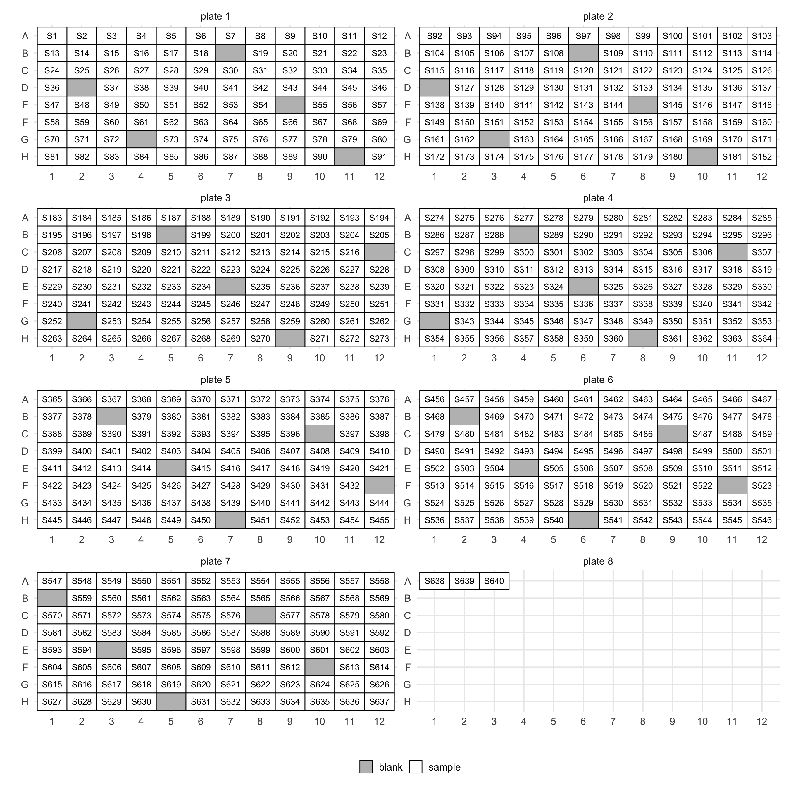
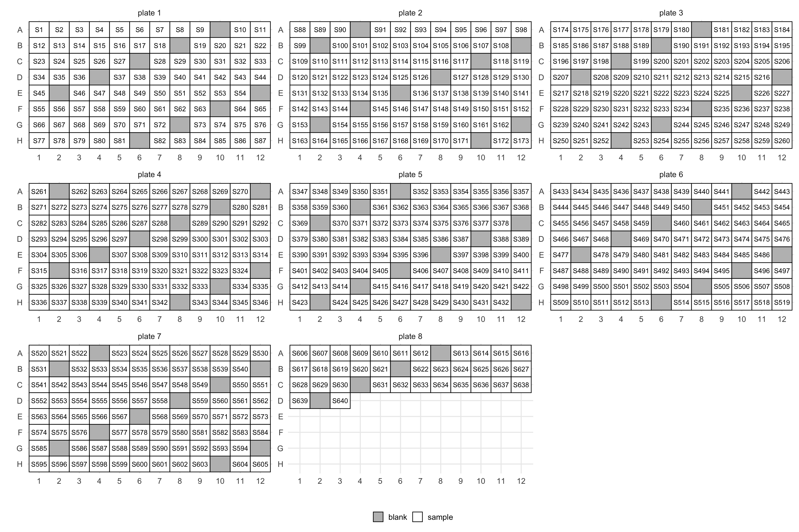
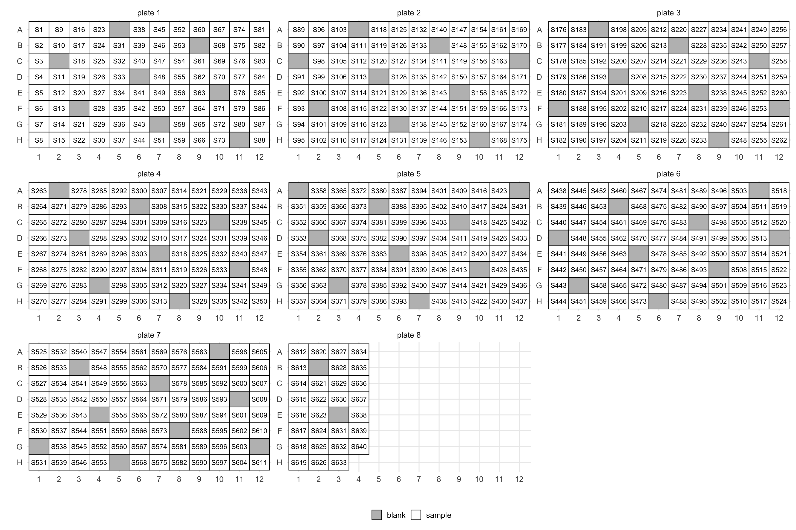

Before even having sequencing data you will have to extract DNA or RNA from possibly many samples. This is often done on 96-well plates which requires designing layouts for many plates. mbtools provides a few helpers for that.
The only thing you will need is yet again a sample manifest. This will need to have an id column again. Let’s make one for a somewhat larger experiment.
library(mbtools)## Also loading:## - dada2=1.12.1
## - data.table=1.12.6
## - ggplot2=3.2.1
## - magrittr=1.5
## - phyloseq=1.28.0
## - ShortRead=1.42.0
## - yaml=2.2.0## Found tools:## - minimap2=2.17-r941
## - slimm=0.3.4
## - samtools=1.9##
## Attaching package: 'mbtools'## The following object is masked _by_ 'package:BiocGenerics':
##
## normalize## The following object is masked from 'package:graphics':
##
## layoutmanifest <- data.table(
id = paste0("S", 1:640),
age = runif(640, 18, 97) %>% ceiling(),
treatment = c("control", "inulin")[(runif(640) > 0.5) + 1],
sex = c("F", "M")[(runif(640) > 0.5) + 1]
)
head(manifest)## id age treatment sex
## 1: S1 46 inulin F
## 2: S2 36 inulin M
## 3: S3 21 control F
## 4: S4 40 inulin M
## 5: S5 48 inulin F
## 6: S6 65 control FYou can now get plate layouts by using layout.
lo <- layout(manifest)This will annotate your manifest with wells and also add in blanks (those have empty IDs):
This will create a plate map as well. You can control the number of columns with the ncol argument.
layout(manifest, ncol = 2)$layout
You can control the frequency of blanks with the blank_step argument. Set it to Inf or NA to get no blanks.
layout(manifest, blank_step = 9, ncol = 3)$layout
Depending on how you like to arrange your samples you could also do so by column:
layout(manifest, blank_step = 10, by = "col", ncol = 3)$layout